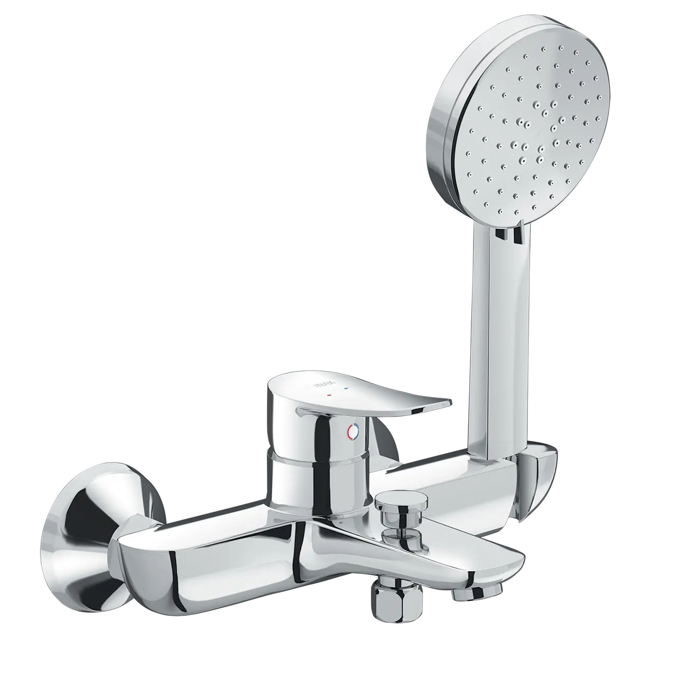
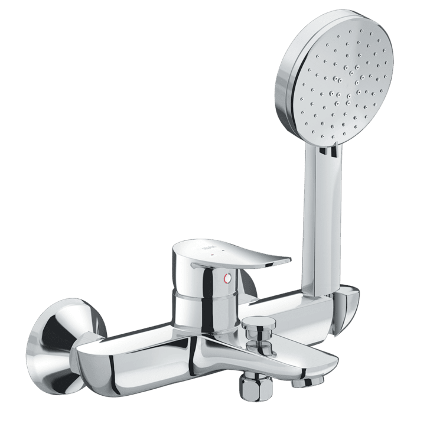
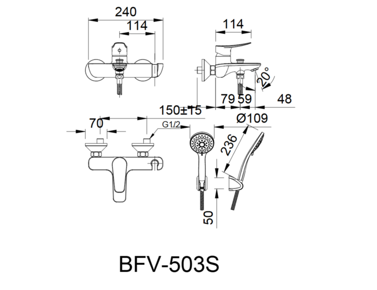

Với những đường nét vuông vức kết hợp cùng tay sen tối giản, sen vòi đơn BFV-503S không chỉ là một thiết bị vệ sinh mà còn là điểm nhấn sang trọng, mang lại cảm giác sảng khoái tuyệt đối cho không gian phòng tắm hiện đại.Thiết kế sen vòi đơn BFV-503SSen vòi đơn BFV-503S sở hữu ngoại hình góc cạnh, khỏe khoắn, phù hợp với xu hướng thiết kế nội thất đương đại mang đậm tính cá tính.Sản phẩm đi kèm tay sen massage chuyên dụng từ INAX, giúp người dùng tận hưởng những giây phút thư giãn, xua tan mệt mỏi sau một ngày làm việc.Tay vặn vòi được thiết kế tối ưu giúp việc điều chỉnh nhiệt độ và lượng nước trở nên dễ dàng, tiện lợi và tiết kiệm nước hiệu quả.Chất lượng bền bỉ và công nghệ Nhật BảnChất liệu đồng mạ cao cấp: Thân vòi được làm từ đồng thau nguyên khối mạ Niken Crom đạt tiêu chuẩn khắt khe của Nhật Bản, giúp tăng tuổi thọ sản phẩm và chống ăn mòn vượt trội.Van điều khiển Ceramic: Sử dụng van đĩa bằng sứ có độ bền cực cao, giúp khóa nước hoàn toàn và vận hành trơn tru suốt thời gian dài sử dụng.An toàn sức khỏe: Vòi nước được sản xuất với hàm lượng chì cực thấp, đảm bảo nguồn nước sạch và an toàn cho các thành viên trong gia đình.Vận hành ổn định trong mọi điều kiệnSen vòi đơn kết hợp cùng tay sen tắm INAX BFV-503S hoạt động hiệu quả trong dải áp lực từ 0.05 MPa đến 0.75 MPa, đảm bảo dòng chảy luôn ổn định và mạnh mẽ.Video giới thiệu sen vòi, sen tắm INAXBản vẽ sen vòi đơn BFV-503SThông số kỹ thuậtChất liệuĐồng mạ Crom/NikenLoạiSen vòi đơnKích thước102mm x 240mm x 186mmThiết kếTay sen Massage 1C với 3 chế độ phunThương hiệuINAXTính năng- Thiết kế vuông vức mạnh mẽ, sang trọng - Van Ceramic siêu bền, chống rò rỉ nước tuyệt đối - Vòi ít chì, đảm bảo an toàn cho sức khỏe người dùngÁp lực nước0.05 MPa - 0.75 MPaKhác- Hotline tư vấn và bảo hành: 18006633
Sen vòi đơn BFV-503S
Vòi chậu thương hiệu INAX.
Đã cập nhật danh sách yêu thích.
DANH MỤC: Vòi chậu
MÃ SẢN PHẨM: BFV-503S
DEPTH: 102mm
HEIGHT: 186mm
WIDTH: 240mm
Với những đường nét vuông vức kết hợp cùng tay sen tối giản, sen vòi đơn BFV-503S không chỉ là một thiết bị vệ sinh mà còn là điểm nhấn sang trọng, mang lại cảm giác sảng khoái tuyệt đối cho không gian phòng tắm hiện đại.Thiết kế sen vòi đơn BFV-503SSen vòi đơn BFV-503S sở hữu ngoại hình góc cạnh, khỏe khoắn, phù hợp với xu hướng thiết kế nội thất đương đại mang đậm tính cá tính.Sản phẩm đi kèm tay sen massage chuyên dụng từ INAX, giúp người dùng tận hưởng những giây phút thư giãn, xua tan mệt mỏi sau một ngày làm việc.Tay vặn vòi được thiết kế tối ưu giúp việc điều chỉnh nhiệt độ và lượng nước trở nên dễ dàng, tiện lợi và tiết kiệm nước hiệu quả.Chất lượng bền bỉ và công nghệ Nhật BảnChất liệu đồng mạ cao cấp: Thân vòi được làm từ đồng thau nguyên khối mạ Niken Crom đạt tiêu chuẩn khắt khe của Nhật Bản, giúp tăng tuổi thọ sản phẩm và chống ăn mòn vượt trội.Van điều khiển Ceramic: Sử dụng van đĩa bằng sứ có độ bền cực cao, giúp khóa nước hoàn toàn và vận hành trơn tru suốt thời gian dài sử dụng.An toàn sức khỏe: Vòi nước được sản xuất với hàm lượng chì cực thấp, đảm bảo nguồn nước sạch và an toàn cho các thành viên trong gia đình.Vận hành ổn định trong mọi điều kiệnSen vòi đơn kết hợp cùng tay sen tắm INAX BFV-503S hoạt động hiệu quả trong dải áp lực từ 0.05 MPa đến 0.75 MPa, đảm bảo dòng chảy luôn ổn định và mạnh mẽ.Video giới thiệu sen vòi, sen tắm INAXBản vẽ sen vòi đơn BFV-503SThông số kỹ thuậtChất liệuĐồng mạ Crom/NikenLoạiSen vòi đơnKích thước102mm x 240mm x 186mmThiết kếTay sen Massage 1C với 3 chế độ phunThương hiệuINAXTính năng- Thiết kế vuông vức mạnh mẽ, sang trọng - Van Ceramic siêu bền, chống rò rỉ nước tuyệt đối - Vòi ít chì, đảm bảo an toàn cho sức khỏe người dùngÁp lực nước0.05 MPa - 0.75 MPaKhác- Hotline tư vấn và bảo hành: 18006633
DANH MỤC: Vòi chậu
MÃ SẢN PHẨM: BFV-503S
DEPTH: 102mm
HEIGHT: 186mm
WIDTH: 240mm